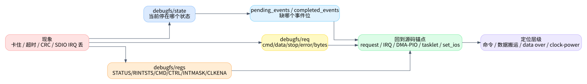

06. 调试与读代码方法
这一篇给实际排障用。目标不是列所有寄存器，而是帮助你把现象快速映射到
dw_mmc.c 的几条路径：request 入口、事件生产者、tasklet
消费者、数据路径、clock/power 路径。

1. debugfs 能直接看到的东西
如果内核启用了
CONFIG_DEBUG_FS，dw_mci_init_debugfs()
会创建调试节点，定义在
kernel/drivers/mmc/host/dw_mmc.c:193。
| 节点 | 创建位置 | 用途 |
|---|---|---|
regs |
kernel/drivers/mmc/host/dw_mmc.c:203 |
读 STATUS/RINTSTS/CMD/CTRL/INTMASK/CLKENA |
req |
kernel/drivers/mmc/host/dw_mmc.c:204 |
打印当前 request 的 cmd/data/stop/error/bytes |
state |
kernel/drivers/mmc/host/dw_mmc.c:205 |
当前 tasklet 状态机状态值 |
pending_events |
kernel/drivers/mmc/host/dw_mmc.c:206 |
IRQ/timer 已投递、tasklet 待消费的事件位 |
completed_events |
kernel/drivers/mmc/host/dw_mmc.c:208 |
tasklet 已消费的事件位 |
fail_data_crc |
kernel/drivers/mmc/host/dw_mmc.c:210 |
fault injection 场景下可注入 data CRC 错误 |
状态值按 enum dw_mci_state 解码，定义在
kernel/drivers/mmc/host/dw_mmc.h:21。事件 bit 按
EVENT_CMD_COMPLETE = 0、EVENT_XFER_COMPLETE = 1、EVENT_DATA_COMPLETE = 2、EVENT_DATA_ERROR = 3
解码，定义在 kernel/drivers/mmc/host/dw_mmc.h:32。
2. 先判断卡在哪一层
| 现象 | 优先看 | 可能位置 |
|---|---|---|
| request 没开始 | state 是否 IDLE，req
是否为空，card detect |
dw_mci_request()、dw_mci_queue_request() |
| 命令不完成 | pending_events 是否缺 bit0，regs 的
RINTSTS/CMD/INTMASK |
dw_mci_cmd_interrupt()、cto_timer、clock |
| 数据搬不完 | bit1 是否缺失，DMA/PIO 模式 | DMA callback、PIO RXDR/TXDR |
| data over 不来 | bit2 是否缺失，RINTSTS 是否有 DATA_OVER/DRTO |
dw_mci_interrupt()、dto_timer |
| 一直 data error | bit3、data_status、DCRC/DRTO/EBE/SBE |
dw_mci_data_complete()、reset、FIFO/DMA |
| CMD11 后不再接新请求 | state 是否 WAITING_CMD11_DONE，后续
set_ios() 是否有 clock 非 0 |
CMD11 + setup_bus() + set_ios() |
| SDIO IRQ 丢 | CLKENA low power bit、SDIO INTMASK、runtime PM |
dw_mci_prepare_sdio_irq()、dw_mci_enable_sdio_irq() |
3. 看日志/加 trace 时的推荐锚点
如果要临时加日志，优先加在“边界点”，不要在每个分支里撒日志：
| 锚点 | 代码位置 | 建议记录 |
|---|---|---|
| 请求进入 | kernel/drivers/mmc/host/dw_mmc.c:1469 |
opcode、data blocks/blksz、state、queue 是否空 |
| 请求启动 | kernel/drivers/mmc/host/dw_mmc.c:1363 |
cmd->opcode、是否 sbc、是否
data、cmdflags |
| 命令完成事件 | kernel/drivers/mmc/host/dw_mmc.c:2920 |
pending status、cmd_status、state |
| data error/data over | kernel/drivers/mmc/host/dw_mmc.c:2983
/ kernel/drivers/mmc/host/dw_mmc.c:3005 |
data_status、dir、DMA/PIO |
| tasklet 状态迁移 | kernel/drivers/mmc/host/dw_mmc.c:2171 |
old state、new state、pending/completed events |
| 请求结束 | kernel/drivers/mmc/host/dw_mmc.c:1967 |
cmd/data/stop error、bytes、next queue |
| clock 配置 | kernel/drivers/mmc/host/dw_mmc.c:1250 |
requested clock、div、actual_clock、CLKENA |
如果日志太多，先只加 request start、IRQ event、tasklet state、request end 四处。这样能还原一次请求的闭环。
4. 错误码从哪里来
命令错误在 dw_mci_command_complete() 里映射，定义在
kernel/drivers/mmc/host/dw_mmc.c:2004：
SDMMC_INT_RTO->-ETIMEDOUT- response CRC 错 ->
-EILSEQ - response error ->
-EIO
数据错误在 dw_mci_data_complete() 里映射，定义在
kernel/drivers/mmc/host/dw_mmc.c:2037：
SDMMC_INT_DRTO->-ETIMEDOUTSDMMC_INT_DCRC->-EILSEQSDMMC_INT_EBE按读/写方向分别处理- 其他包含 SBE 的错误 ->
-EILSEQ
如果上层只看到 -EILSEQ 或
-ETIMEDOUT，需要回到底层
cmd_status/data_status 才能知道是 RCRC、DCRC、DRTO、EBE
还是 SBE。
5. 一次正常读请求的核对清单
dw_mci_request()被调用，card present。dw_mci_queue_request()从IDLE转SENDING_CMD。__dw_mci_start_request()设置 BYTCNT/BLKSIZ，准备 DMA/PIO，发命令。- IRQ 设置
EVENT_CMD_COMPLETE，tasklet 完成 command。 - DMA callback 或 PIO 函数设置
EVENT_XFER_COMPLETE。 - DATA_OVER IRQ 设置
EVENT_DATA_COMPLETE。 - tasklet 调
dw_mci_data_complete()，无错则request_end()。 mmc_request_done()被调用，队列为空则回IDLE。
这 8 步任何一步断了，都能在
state/pending_events/completed_events/regs/req
中找到对应缺口。
6. 文章质量边界
这套文章的自检目标是文档质量，不替代内核运行验证。发布前检查过：Markdown
文件齐全，SVG 引用存在且非空，文中
kernel/drivers/mmc/host/dw_mmc.c:行号 和
dw_mmc.h:行号 都在当前源码范围内，且没有占位符残留。
真正要验证驱动行为，还需要结合目标板日志、debugfs 和实际读写/枚举测试。